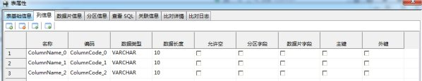
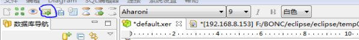

ER编辑器用来编辑数据库模型，支持编辑表，表与表之间的关系等基本操作。
在ER编辑器的画板上选择“新建表”：
然后拖动鼠标到编辑器任意位置，点击鼠标左键，这时编辑器中会出现一张空表，如图：
双击表头，弹出编辑表的对话框：
选择“标记出信息”和“列信息”的选项卡，编辑表内容后，单击确定按钮，生成一张自定义的表：
①、选中要编辑的表模型，双击出现表模型编辑窗口，如下图：
其中在表基础信息中，包含表名、表描述和表类型，其中表类型分为事实表和维表，在列信息中主要包括对列信息的增删改查，在分区信息中包括对分区字段的修改，数据片管理主要是对数据片和数据片数量的编辑，查看SQl主要是生成表的SQL脚本，关联信息主要包含该表关联的外键信息，比对详情是该表和数据库中相同表名的对比详情，比对日志则是和数据库表同名的比对概述
②、在表基础信息中，默认表名和表描述是是新生成的表头，表类型默认为是事实表
③、在列信息中，包含：字段名称，编码，数据类型，数据长度，是否允许为空，分区字段，数据片字段，主键，外键，其中点击工具栏或者单击未编辑的表格可以实现增加一列数据，如下图

点击 ，实现删除一列数据并自动选中删除列的上一行（如果存在），如下图：
，实现删除一列数据并自动选中删除列的上一行（如果存在），如下图：
点击，可以实现将选中列位置下移，如下图：
点击可以实现选中列位置上移，如下图：
右键单击选中列，出现复制和粘贴菜单，如下图：
单击复制，整列数据自动保存到系统粘贴板上。此时粘贴科操作，如下图：
单击粘贴，则复制的列信息添加到原表格中如下图：
其中列信息中的名称和编码不能重复。
④、单击数据片选项卡，进行数据片信息编辑如下图：
其中左侧列表是列字段，右侧为数据片字段，可以双击左侧字段或者点击，实现添加数据片字段如下图：
双击右侧数据片字段或者单击，注销数据片字段如下图：
通过右下角的编辑框进行数据片数量的编辑如下图：
⑤、单击分区信息选项卡，进行分区信息的编辑如下图：
其中左侧为表字段，右侧为分区字段，双击左侧的表字段或者单击，表字段自动添加到分区字段中如下图：
双击右侧数据片字段或者单击，注销分区字段如下图：
单击，则所有表字段注册为分区字段，如下图：
单击，则注销所有分区字段，如下图：

⑥、单击查看SQL选项卡，主要是建表脚本如下图：
单击复制，则建表脚本自动复制到系统粘贴板上
⑦、单击确定按钮，完成表信息的编辑，如下图：
①、打开ER模型文件，在工具栏中找到部署按钮，如下图
②、点击部署按钮，出现部署设置如下图：
其中连接名是已经连接的且存在模式选项的数据库连接点列表，否则部署操作不能执行
③、选好连接名和模式之后，点击部署，当部署成功后点击部署日志图标，出现部署日志如下图：
④、刷新数据库连接点，新表出现在表列中如下图：
①、找到工具栏中的部署日志图标，如下图：
②、点击工具栏中的部署日志按钮，则会出现总的部署日志如下图：
①、打开需要比较的ER模型文件，如下图
②、选中工具栏中的比对图标如下图：
③、点击比对图标，设置比对信息如下图：
④、设置好比对信息后，点击比对图标进行比对，然后点击比对日志图标，查看比对日志，出现比对日志如下图：
⑤、如果ER文件模型与数据库模型存在区别，在模型出现提示图标，如下图：

⑥、此时双击表模型，在比对详情选项卡中可以查看到比对的具体信息如下图：
在比对日志选项卡中，可以看到比对日志如下图：
①、选中ER模型文件中的两个表模型（只能选择两个），右键出现比对模型菜单，此时根据栏的比对模型图标也可使用，如下图：
②、点击①中的任意入口，出现比对详情，如下图：
①、找到工具栏中的比对日志图标，如下图：
②、点击工具栏中的比对日志图标，则会出现总的比对日志如下图：
①、Table1中id是其主键，Table2中的id是其外键，如下图
②、双击Table1表模型，打开关联信息选项卡，可以查看其外键信息，如下图：
①、选中要修改样式的表模型，如下图：
②、点击工具栏中的字体列表，选中要修改成的字体样式
效果如下图：
③、点击工具栏的字体大小选项列表，选中要改成的字体大小，效果如下图：
④、点击工具栏中的斜体，效果如下图：
⑤、点击工具栏中的粗体，效果如下图：
⑥、点击设置背景颜色选项，效果如下图：
①、打开已存在的ER模型文件，在工具栏中找到导出SQL图标，如下图：

②、点击导出模型图标，弹出保存脚本对话框选择保存的地址，并输入脚本名称，如下图：
③、点击保存，在存储路径下找到保存的脚本，打开如下图：
当创建好两张表后或者已经导入了两张表（后文介绍），如图：
在ER编辑器的画板上选择“连接”：
然后点击编辑器上的一张表不松手，拖动鼠标至另外一张表松手，这时两张表已经建立了关系。如图：
表与表之间可以创建关系，同时也能编辑关系。
选中关系（连线），当关系两端出现端点即为选中：
双击关系，弹出编辑关系的对话框，如图：
在这里，可以查看和编辑两张表之间的关系，通过名称和编码对应的文本框改变关系的名称和编码，两个下拉框可以指定父表和字表。点击另外一个选项卡，如图：
这里可以编辑两张表之间的主外键关系，例如上述两张表，父表（CODE_AAA）的主键（DINNER_ID）对应子表（DIM_AREA）的外键（DINNER_ID），在这修改子表（DIM_AREA）的外键为AREA_ID，使子表（DIM_AREA）得AREA_ID既是其主键又是其外键，修改如下：
点击确定按钮，效果如图：
提供了删除表和删除关系的基本功能方便ER模型的编辑。
选中指定要删除的表模型，右键点击该表模型，选择Delete from Model如下图：
同时，也可以选中要指定删除的表模型，按下键盘上的Delete键也可以删除。
删除关系后，两张表之间的主外键关系一并删除。删除关系操作参照删除表模型操作。
有时候，编辑器上的表过多会让人在编辑时感到不方便，因此对编辑器上的表模型提供了最小化功能。
在编辑器处于活动状态（处于焦点）时，点击工具栏上按钮，编辑器上的所有表模型都会最小化，效果如下图：
再次点击按钮时，所有表模型会复原。
也可以通过单个表模型右上方的按钮控制单个表模型的最大最小化，如下图：
其中名称（Name）表示模型的显示名称，是给非技术人员看的。编码（Code）表示模型的技术名称，用于生成代码的。默认是显示编码，可以通过工具栏按钮来切换显示编码还是显示名称。
如下图表模型，默认表名显示的是编码（Code）。
当点击工具栏按钮切换成显示名称后，效果如下图：
当编辑器画布上的表模型非常多时，为了更方便的对画布上的模型进行编辑，提供了放大和缩小功能。
工具栏上的放大缩小下拉框可以调整画布的显示比例，如图：
也可以在编辑器处于活动状态（处于焦点）时，按住Ctrl键同时滚动鼠标滚轮来调整画布的显示比例。